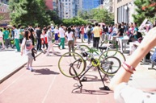
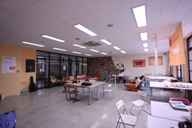
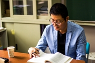
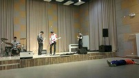
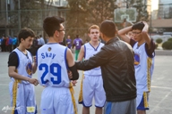
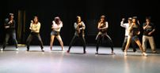
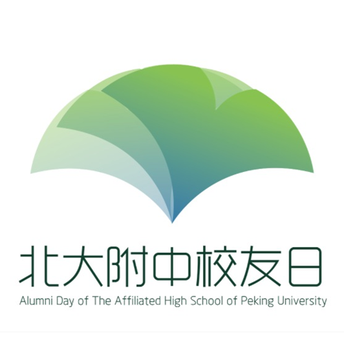

-
第三届北大附中校友日
校友日简介
北大附中校友日即北京大学附属中学校友返校日——每年10月
6日，北大附中面对全部校友开放。意在为校友提供回校看望
老师、同学团聚和与在校生交流的机会，目前已连续成功举办两
届。今年10月6日第三届北大附中校友日主题为“又是银杏叶黄
时”：银杏叶黄，再听一节最喜欢的课、再与旧时伙伴打一场球
赛、再到食堂吃一顿午餐；银杏又黄，看看注册社团的最新发展
、猜猜书院logo背后的含义、听听新一届学长团的理念与感动....
往届回顾
--->2012年第一届校友日以类似嘉年华的形式，进行了黑匣子和中庭的揭幕仪式等活动，第一次让各界知道了10月6日是北大附中校友返校的日子。
--->2013年第二届校友日纪念了拥有悠久历史但因校园规划被拆除的体育馆，同时诚挚邀请校友加入北大附中校友会并积极推广附中文化。
-
活动简介
 10:00:校友入校及社团宣传
校友从南门进入学校，就能看见教学楼、宿舍楼及篮球场，听见在校生交谈发出的笑声，加上各个社团的介绍宣传。这些无不把人带入浓郁的回忆中，也能看出学校各方面的发展情况。
 [中庭&西楼大厅]10:30~~11:00:书院logo揭幕仪式及荣誉书院的成员招募
紧接着，你们可以光临中庭加入一个自己青睐的书院。来自7个书院的在校生将会制作精美的纪念品，并向你们宣传自己书院的独特文化。在这一环节中，毕业生和在校生将有充足的时间面对面交流，我们也将公开
招募书院荣誉成员。10:30-11:00在西楼大厅，我们将迎来这次校友日最隆重的活动——书院徽章揭幕仪式。王铮校长将会为校友日致辞，并掀开书院徽章的神秘面纱。我们十分好奇你们对我们的“书院制”有什么样的看法，我们的书院在你们眼中又有着什么样的闪光点？加入我们吧，一起传承附中文化！
 [西楼]11:00~~12：00:经典课程回顾
带领校友们重温高中时代温馨的课堂氛围。韩校老师的历史课，王来宁老师的中文课，人物、场景都不曾改变，变得只有一届届学生从陌生到熟悉到不舍。老师永远在这里守护着在校生们，辛勤毫不懈怠地工作。老师也永远在这里盼着校友们回来，看这桃李满天下。
所谓良师益友，这便是良师环节。
更多活动 [食堂&篮球场]12:00~~14:00在空地将会有乐队演出
校友从南门进入学校，就能看见教学楼、宿舍楼及篮球场，听见在校生交谈发出的笑声，加上各个社团的介绍宣传。这些无不把人带入浓郁的回忆中，也能看出学校各方面的发展情况。
-
活动简介
 [篮球场&南楼小剧场]14:00~~15:00:篮球友谊赛和中心社团演出。
想必校友们也曾参加过或观看过篮球赛，篮球场的这个时段，是个能让校友们重新聚在一起切磋球技的好时刻。以往的精彩能再一次上演，以往的遗憾能得以弥补，还有什么地方比在这里更亲切更舒心呢？良师益
友，益友环节也来源于此。中心社团无伴奏人声合唱团和国乐社的演出尽在南楼小剧场，在这里，校友们能感受到北大附中青春洋溢的社团文化，在校生们的努力成果也在这里充分呈现。
 [黑匣子]15:00~~16:30:注册社团演出
黑匣子从15:00开始进行长达一个半小时的注册社团演出，包括街舞社、独唱团、混音社的表演令人目不暇接。仿佛来到个与世隔绝的地方，专业的灯光音响，带校友们再次体验附中学生的独特个性。当然这一环
节也少不了积极参与的毕业校友们，比起在校生的青涩，他们更成熟稳重有实力。
返回前页[南楼大厅]16:30~~17:30:历届学长团成员故事分享
作为北京唯一拥有学长团的学校，总共六届的学长团是附中的特色。你还曾记得你的学长团都有谁吗？你还曾记得你的同学有谁也跃跃欲试最终成为一名学长团成员吗？亦或是，你就是学长团的一份子？六届学长团成员在这次校友日
能都聚到一起，分享那时的经历与心境。
-
日程安排
10:00上午校友入校、社团宣传
场地:南门、主干道
10:30上午王铮校长致词，书院徽章揭幕仪式
场地:西楼大厅
书院宣传及荣誉书院成员招募
场地:中庭
11:00上午经典课程回顾
场地:西楼
下午14:00中心社团演出
场地:南楼小剧场
篮球友谊赛
场地:篮球场
15:00下午注册社团演出
场地:黑匣子
下午16:30了解更多历届学长团成员故事分享
场地:南楼大厅
-
联系我们：
第三届北大附中校友日，期待你们回家:)
报名方式：
http://www.huodongxing.com/event/6246913359400
校友卡办理:
邮箱：xiaoyouri@pkuschool.edu.cn
联系电话：010-010-58751210
地址：北京市，海淀区，大泥湾路

More Website Templates @ TemplateMonster.com -September 19th, 2011!
{kind=link}
{kind=link}
{kind=link}
{kind=link}
{kind=link}
{kind=link}
{kind=link}